LAPORAN SISTEM OPERASI
Tugas 2-Operasi Input Output
TI-1D-09
LAPORAN RESMI
- Analisa hasil percobaan dan latihan.
- Analisa akan saya jawab setelah semua percobaan dan Latihan selesai . (jawaban di bawah sendiri)
- Kesimpulan dari praktikum ini.
- grep digunakan untuk menampilkan baris-baris yang sesuai dengan yang didefinisikan oleh pengguna. Perintah grep membutuhkan minimal 2 inputan, yang pertama adalah kata yang akan dicari dan yang kedua adalah dimana kata tersebut harus dicari. Perintah grep dapat digunakan sendiri maupun digabungkan dengan perintah pipe.
- Perintah pipe merupakan salah satu kelebihan yang dimiliki oleh linux, perintah ini digunakan untuk membuat sebuah keluaran dari suatu perintah menjadi input dari perintah lainnya.
- Untuk membelokkan tampilan standard output ke file baru yaitu bisa dengan menggnakan perintah
$ ls -sl>baru$ cat baruKemudian untuk melihat daftar secara lengkap pada direktori /etc/abc belokkan tampilan standard output ke file baru tanpa menghapusnya bisa menggunakan perintah.$ cat /etc/abc >>baru$ cat baruDan untuk mengurutkan file baru bisa dengan cara membelokkan standar input dengan perintah$ sort <baru
Percobaan 1: File Descriptor
- Output ke layar (standar output), input dari system (kernel)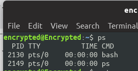
- Output ke layar (standar output), input dari keyboard (standard input)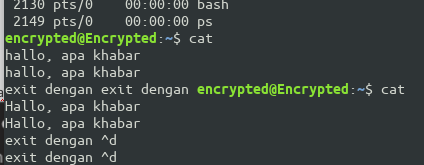
- Input dari keyboard dan output ke alamat internet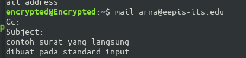
- Input nama direktori, output tidak ada (membuat direktori baru), bila terjadi error maka tampilan error pada layar (standard error)
Percobaan 2: Pembelokan (redirection)
- Pembelokan standar output 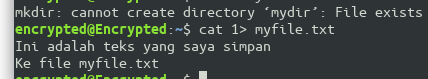
- Pembelokan standar input, yaitu input dibelokkan dari keyboard menjadi dari file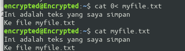
- Pembelokan standar error untuk disimpan di file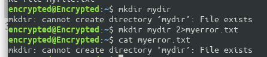
- Notasi 2>&1 : pembelokan standar error (2>) adalah identik dengan file descriptor 1.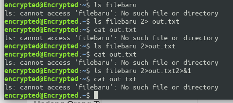
- Notasi 1>&2 (atau >&2) : pembelokan standar output adalah sama dengan file descriptor 2 yaitu standar error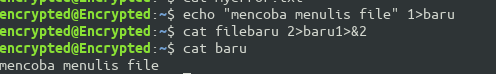
- Notasi>>(append)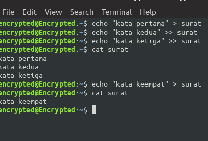
- Notasi here document (<<++ .... ++) digunakan sebagai pembatas input dari keyboard. Perhatikan bahwa tanda pembatas dapat digantikan dengan tanda apa saja, namun harus sama dan tanda penutup harus diberikan pada awal baris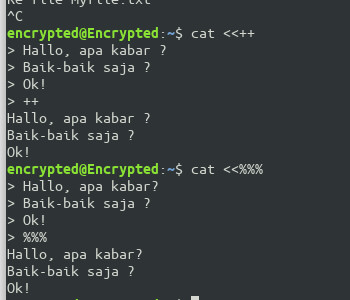
- Notasi – (input keyboard) adalah representan input dari keyboard. Artinya menampilkan file 1, kemudian menampilkan input dari keyboard dan menampilkan file 2. Perhatikan bahwa notasi “-“ berarti menyelipkan input dari keyboard 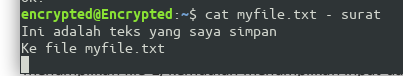
- Untuk membelokkan standart output ke file, digunakan operator ">"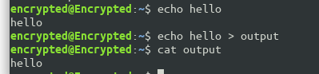
- Untuk menambahkan output ke file digunakan operator ">>"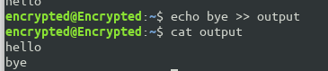
- Untuk membelokkan standart input digunakan operator <
- Pembelokan standart input dan standart output dapat dikombinasikan tetapi tidak boleh menggunakan nama file yang sama sebagai standart input dan output. 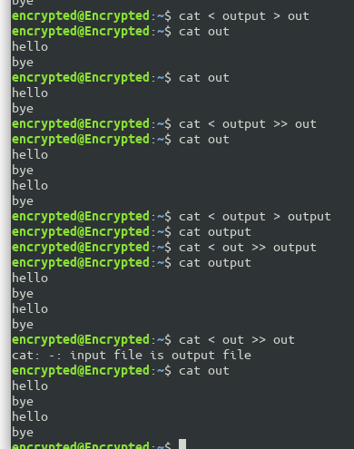
Percobaan 3 : Pipa (pipeline)
- Operator pipa (|) digunakan untuk membuat eksekusi proses dengan melewati data langsung ke data lainnya.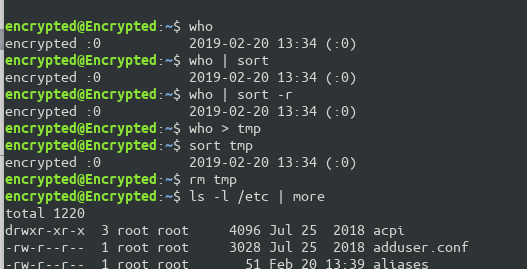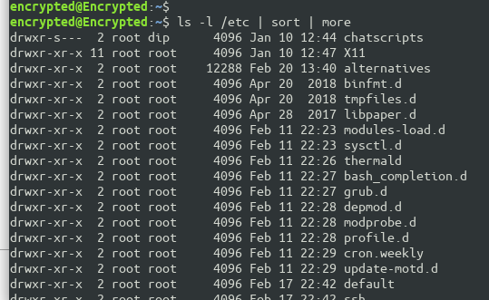
Percobaan 4 : Filter
- Pipa juga digunakan untuk mengkombinasikan utilitas sistem untuk membentuk fungsi yang lebih kompleks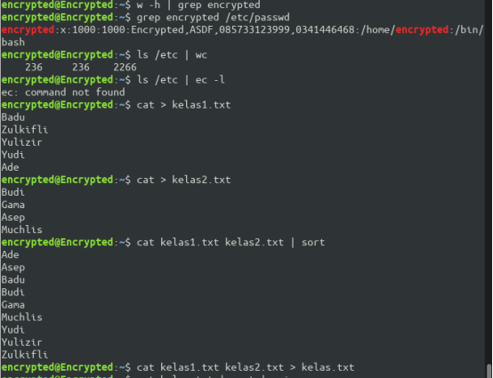
Latihan
- Lihat daftar secara lengkap pada direktori aktif, belokkan tampilan standard output ke file baru.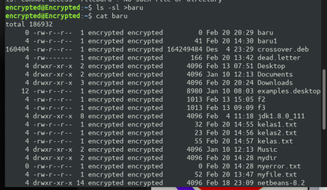
- Lihat daftar secara lengkap pada direktori /etc/passwd , belokkan tampilan standard output ke file baru tanpa menghapus file baru sebelumnya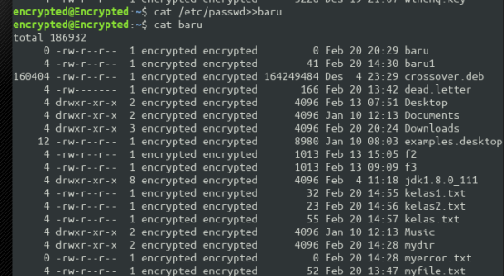
- Urutkan file baru dengan cara membelokkan standard input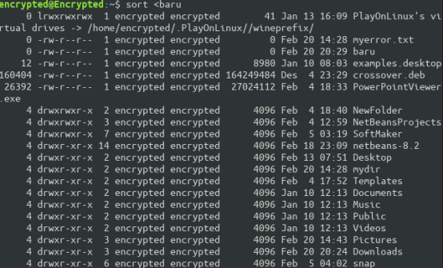
- Urutkan file baru dengan cara membelokkan standard input dan standard output ke file baru.urut 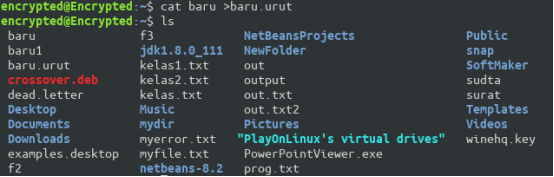
- Buatlah direktori latihan2 sebanyak 2 kali dan belokkan standard error ke file "rmdirerror.txt"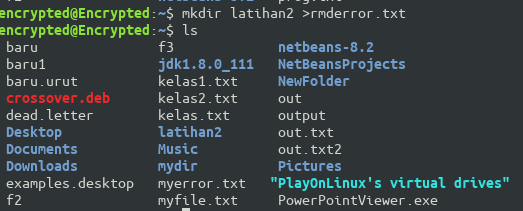
- 6.Urutkan kalimat berikut :
- Jakarta
- Bandung
- Surabaya
- Palembang
- Lampung Dengan menggunakan notasi here document (<@@@ ...@@@) 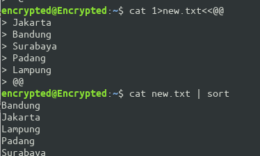
- 7.Hitung jumlah baris, kata dan karakter dari file baru.urut dengan menggunakan filter dan tambahkan data tersebut ke file baru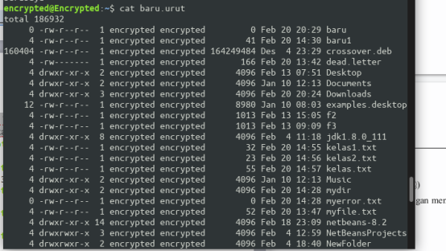
- 8.Gunakan perintah di bawah ini dan perhatikan hasilnya.
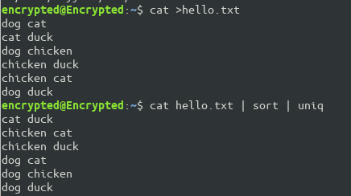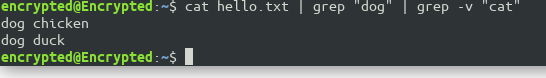$ cat > hello.txt dog cat cat duck dog chicken chicken duck chicken cat dog duck [Ctrl-d] $ cat hello.txt | sort | uniq $ cat hello.txt | grep “dog” | grep –v “cat”}
Rangkuman Video Manajemen Proses
Manajemen Proses
1. Proses dalam Sistem Operasi Manajemen proses merupakan system dasar dalam Sistem Informasi, apabila manajemen proses mengalami masalah maka akan berdampak dalam perancangan system operasi atau bisa diartikan sebagai sebuah program yang sedang dieksekusi. Adapun pengertian lain yaitu, unit kerja terkecil yang secara individu yang terjadwal oleh system operasi. Di dalam proses terdapat intruksi, data , program counter, dll. 2. Diagram State Proses Apabila sebuah proses bekerja merubah state atau keadaan statis. Dan untuk mengetahui status sebuah proses didefinisikan oleh aktifitas yang ada dari proses yang sedang bekerja.sebuah proses memiliki 3 status utama yaitu Running,waiting,ready. Pada saat pembentukan dan terminasi terdapat 2 status tambahan yaitu New,dan Terminated. Dalam satu waktu hanya dapat berjalan 1 proses dalam 1 processor , namun banyak proses yang berstatus ready/waiting. Jika terdapat 3 status proses akan terjadi suatu program dan jika sudah selesai berubah menjadi terminated , kedua apabila waktu yang disediakan oleh operasi system selesai akan terjadi interrupt dan status berubah menjadi ready. Dan yang ketiga jika suatu even selesai dan terjadi permintaan MK, maka proses akan menunggu sampai selesai dan berstatus waiting. 3.Siklus Hidup ProsesSiklus terbagi menjadi 5 proses yaitu,
- Sebuah yang diciptakan akan disebut sebagai state ready
- Proses yang berstate Runningakan berubah menjadi block karna sumber daya belum diterima
- Proses running berubah menjadi ready karena penjadwal memutuskan proses lain.
- Proses berstatus blog akan menajdi ready apabila apabila sumber daya yang diperlukan sudah tersedia.
- Proses ready menjadi running karena penjadwal memutus pemroses untuk proses tersebut.
- Process Control Block Dalam PCB terdapat 3 informasi :
- Informasi identifikasi proses
- Informasi status proses
- Informasi can asli proses
Terdapat beberapa elemen yaitu kewenangan proses berkaitan dengan memory dan tipe instruksi, menejemen memory berisi pointer,kepemilikan dan utilitas sumber daya.
- Process Switching Proses Switching atau pengalihan proses akan terjadi jika proses berubah menjadi ready pada SO. Faktor penyebab terjadinya proses Switching yaitu,:
- Intruksi system (disebabkan karena kejadian ekternal dan tidak tergantung pada proses)
- Trap (interupsi karena terjadi kesalahan)
- Supervisor Call (panggilan meminta/mengaktifkan bagian system Operasi) Langkah yang terjadi pada Proses Switching yaitu
- Simpan konteks pemroses ,termasuk register PC dan lainnya
- Perbarui PCB proses yang running
- Field –field yang relevan juga diperbaharui
- Pindahkan PCB proses ke senarai yang cocok
- Pilih satu proses lain untuk di eksekusi sesui teknik penjadwalan
- Perbarui proses PCB yang dipilih
- Perbarui struktur-struktur data manajemen memori
- Kembalikan konteks pemroses dengan konteks simpanan yang memberitahu proses terakhir saat dialihkan.
- Fungsi Sistem Operasi
- Mengalokasikan sumber daya tersebut saat proses diciptakan
- Ketika proses berhenti SO akan mengambil sumber daya tersebut
- Bertanggung jawab atas aktifitas yang berkaitan dengan manajemen proses
- System operasi akan mengatur proses apa saja yang harus dijalankan terlebih dahulu berdasarkan prioritas
- Menyediakan mekanisme untuk singkronasi
- Menyediakan mekanisme untuk proses komunikasi
- Menyediakan mekanisme untuk penanganan datelock/kebuntuan